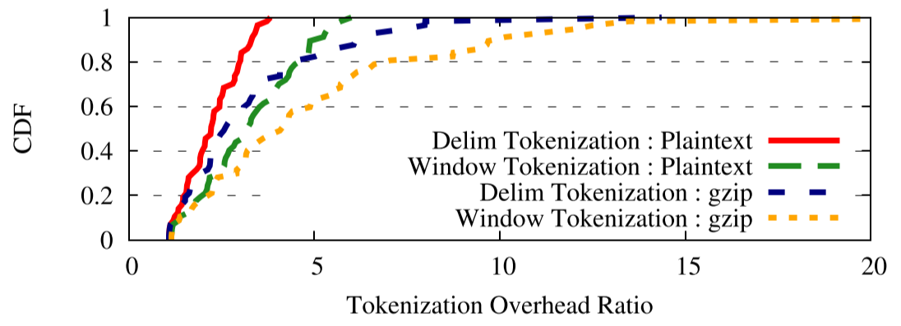

阅读论文 BlindBox: Deep Packet Inspection over Encrypted Traffic
Justine Sherry UC Berkeley
Chang Lan UC Berkeley
Raluca Ada Popa ETH Zürich and UC Berkeley
Sylvia Ratnasamy UC Berkeley
ABSTRACT
Many network middleboxes（中间件） perform deep packet inspection (DPI), a set of useful tasks which examine packet payloads. These tasks include intrusion detection (IDS), exfiltration detection（渗透检测）, and parental filtering（家长监管）. However, a long-standing（长期存在的） issue is that once packets are sent over HTTPS, middleboxes can no longer accomplish（完成） their tasks because the payloads are encrypted. Hence, one is faced with the choice of only one of two desirable（理想的） properties: the functionality of middleboxes and the privacy of encryption（加密的私密性）. We propose BlindBox, the first system that simultaneously（同时） provides both of these properties. The approach of BlindBox is to perform the deep-packet inspection directly on the encrypted traffic. BlindBox realizes this approach（实现了这种方法） through a new protocol and new encryption schemes. We demonstrate（证明了） that BlindBox enables applications such as IDS, exfiltration detection and parental filtering, and supports real rulesets（真实的规则集） from both open-source and industrial DPI systems. We implemented BlindBox and showed that it is practical for settings with long-lived HTTPS connections. Moreover, its core encryption scheme is 3-6 orders of magnitude（3-6个数量级） faster than existing relevant cryptographic schemes.
CCS Concepts
Security and privacy -> Cryptography; Security protocols; Networks -> Middleboxes / network appliances;
Keywords
middlebox privacy; network privacy; searchable encryption
1. INTRODUCTION
Many network middleboxes perform deep packet inspection (DPI) to provide a wide range of services which can benefit both end users and network operators. For example, Network Intrusion Detection/Prevention (IDS/IPS) systems (e.g., Snort[1] or Bro[2]) detect if packets from a compromised（） sender contain an attack. Exfiltration prevention devices block（阻止） accidental leakage（意外泄漏） of private data in enterprises by searching for document confidentiality watermarks（机密水印） in the data transferred out of an enterprise network[3]. Parental filtering devices prevent children from accessing adult material（成人用品） in schools, libraries, and homes [4]. These devices and many others [5][6][7] all share the common feature that they inspect packet payloads; the market（市场） for such DPI devices is expected to grow to over $2B by 2018[8].
At the same time, HTTPS and other encryption protocols have seen dramatic growth in usage in recent years[9]; encryption protects users’ private data from eavesdroppers（窃听者） anywhere in the network, including at a middlebox. Unfortunately, HTTPS poses a long-standing challenge for DPI devices. Since packet payloads are encrypted, network middleboxes can no longer inspect payloads 9 and accomplish their tasks. To enable middlebox processing, some currently deployed middlebox systems support HTTPS in an insecure way: they mount a man-in-the-middle attack on SSL and decrypt the traffic at the middlebox [10][11]. This approach violates（违反了） the end-to-end security guarantees of SSL and thus causes an unfortunate set of issues as surveyed in10. Moreover, users and clients have criticized this approach [12][^ 31][^ 41][13], some expressing worry that the private data logged at the middlebox is given to marketers.
Therefore, one is faced with an unfortunate choice of only one of two desirable properties: the functionality of the middleboxes and the privacy given by encryption. At a first glance, it may appear that these two properties are fundamentally at odds with each other: how can a network appliance make decisions based on connection contents when it cannot see these contents?
In this paper, we demonstrate that it is possible to build a system that satisfies both of these seemingly conflicting properties. We present BlindBox, the first system that provides both the benefits of encryption and functionality at a DPI middlebox. The name “BlindBox” denotes that the middlebox cannot see the private content of traffic.
Our approach is to perform the inspection directly on the encrypted payload, without decrypting the payload at the middlebox. Building a practical such system is challenging: networks operate at very high rates（速率） requiring cryptographic operations on the critical path to run in micro or even nano seconds（微或纳秒）; further, some middleboxes require support for rich operations, such as matching regular expressions（匹配正则表达式）. A potential candidate（潜在的候选者） is expressive cryptographic schemes（密码表达方案） such as fully homomorphic（全同态） or functional encryption（功能性加密） [14][15][16], but these are prohibitively slow, decreasing network rates by many orders of magnitude（数量级）.
To overcome these challenges, BlindBox explores and specializes（专注） on the network setting. BlindBox enables two classes of DPI computation each having its own privacy guarantees（隐私保证）: exact match privacy（完全匹配隐私） and probable cause privacy（可能原因隐私）. Both of BlindBox’s privacy models are much stronger than the state-of-the-art（最先进的） “man in the middle" approach deployed today. In both of these models, BlindBox protects the data with strong randomized encryption schemes providing similar security guarantees to the well-studied（精心准备的） notion of searchable encryption（可搜索加密） [17][18]. Depending on the class of computation, BlindBox allows the middlebox to learn a small amount of information about the traffic to detect rules efficiently.
The first class of computation consists of DPI applications that rely only on exact string matching, such as watermarking, parental filtering, and a limited IDS. Under the associated privacy model（关联隐私模型）, exact match privacy（完全匹配隐私）, the middlebox learns at which positions in a flow attack keywords occur; for substrings of the flow（流子字符串） that do not match an attack keyword, the middlebox learns virtually nothing（几乎什么都不学）.
The second class of computation can support all DPI applications, including those which perform regular expressions or scripting. The privacy model here, probable cause privacy, is a new network privacy model: the middlebox gains the ability to see a (decrypted) individual packet or flow only if the flow is suspicious; namely, the flow contains a string that matches a known attack keyword. If the stream is not suspicious, the middlebox cannot see the (decrypted) stream. Hence, privacy is affected only with a cause. In practice, most traffic remains encrypted. BlindBox allows users to select which privacy model they are most comfortable with.
To implement these two models, we developed the following techniques:
- DPIEnc and BlindBox Detect are a new searchable encryption scheme 17 and an associated fast detection protocol, which can be used to inspect encrypted traffic for certain keywords efficiently. As we explain in §3, existing searchable encryption schemes 1718[19] are either deterministic（确定性的） (which can enable fast protocols, but provide weak security) or randomized (which have stronger security, but are slow in our setting). DPIEnc with BlindBox Detect achieve both the speed of deterministic encryption and the security of randomized encryption; detection on encrypted traffic runs as fast as on unencrypted traffic.
- Obfuscated Rule Encryption（模糊规则加密） is a technique to allow the middlebox to obtain encrypted rules based on the rules from the middlebox and the private key of the endpoints, without the endpoints learning the rules or the middlebox learning the private key. This technique builds on Yao’s garbled circuits [20] and oblivious transfer [21][22][23].（没看懂）
- Probable Cause Decryption is a mechanism to allow flow decryption when a suspicious keyword（可疑的关键字） is observed in the flow; this is the mechanism（机制） that allows us to implement our probable cause privacy model.
We implemented BlindBox as well as a new secure transport protocol for HTTP, which we call BlindBox HTTPS. We evaluated BlindBox HTTPS using several real DPI applications: data watermarking 3, parental filtering, and intrusion detection. We used attack signatures from the open-source community (Snort 1) and industrial IDSes (McAfee Stonesoft and Lastline).
We show that BlindBox’s performance is practical for many settings. For example, the rate at which the middlebox can inspect packets is as high as 186Mbps per core in our experiments. Given that standard IDS implementations, such as Snort1, peak at under 100Mbps, this performance is competitive with existing deployments. We achieve this performance due to DPIEnc and BlindBox Detect. When compared to two strawmen consisting of a popular searchable encryption scheme 17 and a functional encryption scheme [24], DPIEnc with BlindBox Detect are 3-6 orders of magnitude faster. Nevertheless（不过）, a component of BlindBox is not yet as fast as desirable: the setup of an HTTPS connection. This setup performs obfuscated rule encryption（模糊规则加密） and it takes time proportional（正比） to the number of attack rules. For rulesets with tens of keywords, this setup completes in under a second; however, for large IDS installations with thousands of rules, the setup can take up to 1.5 minutes to complete. Hence, BlindBox is most fit for settings using long or persistent connections through SPDY-like protocols or tunneling, and not yet practical for short, independent（短且独立） flows with many rules.
We see BlindBox as a first step towards a general protocol that will allow middleboxes and end-to-end encryption to coexist（共存）, without sacrificing the benefits of either. BlindBox shows that this coexistence is possible for the class of middleboxes performing deep packet inspection. A future, general protocol will devise（设计） mechanisms to address the full range of middleboxes including those that process packet headers, modify packet payloads (such as transcoders and WAN optimizers), or terminate（终止） sessions (such as Web or SIP proxies). Consequently, the subject of our current and future work focuses on achieving this end goal: a general protocol to allow all middleboxes to coexist with encryption.
2. OVERVIEW
Fig. 1 presents the system architecture. There are four parties: sender (S), receiver (R), middlebox (MB), and rule generator (RG) – these reflect standard middlebox deployments today. RG generates attack rules (also called signatures) to be used by MB in detecting attacks. Each rule attempts to describe an attack and it contains fields such as: one or more keywords to be matched in the traffic, offset information for each keyword, and sometimes regular expressions. The RG role is performed today by organizations like Emerging Threats [25], McAfee [26], or Symantec [27]. S and R send traffic through MB. MB allows S and R to communicate unless MB observes an attack rule in their traffic.

Figure 1: System architecture. Shaded boxes indicate algorithms added by BlindBox.
Network administrators today deploy in-network middl-boxes in this way because it gives them a central point of control to enforce security policies in their network (since they often do not control the endpoints). Moreover, having a single in-network device is also easy to manage and upgrade. Some research [28] considered alternative (edge) deployments in which endpoints perform all middlebox processing on their own traffic and rules are distributed to the endpoints. BlindBox instead aims to make changes compatible with the network approach in widespread use today. Further, this edge-based model is not compatible with the requirement of keeping rules hidden from endpoints, which we discuss in §2.2.1. In today’s deployments, MB can read any traffic sent between S and R. With BlindBox, MB should be able to detect if attack rules generated by RG match the traffic between R and S, but should not learn the contents of the traffic that does not match RG’s attack rules.
2.1 Usage Scenarios
Before formalizing our threat model, we illustrate our usage scenario with three examples. For each individual in these examples, we indicate the party in our model (R, S, MB, or RG) that they correspond to.
Example #1: University Network. Alice (R or S) is a student at the University of SIGCOMM and brings her own lap-top to her dorm room. However, university policy requires that all student traffic be monitored for botnet（僵尸网络） signatures and illegal activity by a middlebox (MB) running an IDS. Alice is worried about her computer being infected with botnet software, so she also desires this policy applied to her traffic. McAfee (RG) is the service that provides attack rules to the middlebox and Alice trusts it. However, she is uncomfortable with the idea of someone she doesn’t know (who has access to the middlebox) potentially being able to read her private Facebook messages and emails. Alice installs BlindBox HTTPS with McAfee’s public key, allowing the IDS to scan her traffic for McAfee’s signatures, but not read her private messages.
Example #2: ISP Service. Bob has two young children (S or R) at home, and registers for parental filtering with his ISP so that all traffic is filtered for adult content. However, Bob has read stories in the news of ISPs selling user browsing data to marketers 13 and wants to prevent his ISP (MB) from using his data in this way. Bob trusts the Electronic Filtering Foundation (RG), a non-profit which generates rulesets for filtering and pledges not to sell user data. Bob installs BlindBox HTTPS on his home computer with the Electronic Filtering Foundation’s public key, allowing his traffic to be scanned for EFF rules, but no other data.
In the above examples, Alice and Bob want to have a middlebox in their network check for the attack rules the corresponding trusted parties permit, but the middlebox should not learn anything else about the content of the traffic. A key requirement is that there exists an RG which Alice, Bob and the MB trust with rule generation; if this is not the case, the parties cannot use BlindBox.
Anti-Example #1: Political Dissident（持不同政见者）. Charlie (R or S) is a political dissident who frequently browses sensitive websites, and is concerned about government monitoring. If the government coerces one of MB or RG, Charlie remains protected. However, BlindBox should not be used in a setting in which both MB and RG can be controlled by an attacker: in this case, RG can produce signatures for sensitive terms and MB will use these to match the traffic. Hence, if the government can coerce（胁迫） both MB and RG together, Charlie should not use BlindBox. Similarly, if the government can coerce root certificate generators, Charlie should not use vanilla HTTPS either because it may allow man-in-the-middle at-tacks on his traffic.
2.2 Security and Threat Model
The goal of our work is to protect the privacy of user traffic from MB. Any solution must satisfy a set of systems requirements we discuss in §2.2.1. We then discuss the threat model in §2.2.2 and the privacy guarantees BlindBox pro-vides in §2.2.3.
2.2.1 System Requirements
BlindBox retains（保留） key system goals of traditional IDS deployments today: (1) BlindBox must maintain MB’s ability to enforce its policies (i.e., detect rules and drop/alert accordingly（相应地）, and (2) endpoints must not gain access to the IDS rules. The rationale（基本原理） behind the second requirement is twofold（双重的）. First, in order to make IDS evasion more difficult for an attacker at the user, the rules should be hidden from the endpoints 2. Second, most vendors（供应商） (e.g., Lastline and McAfee Stonesoft) rely on the secrecy of their rulesets in their business model, as their value added against competitors often includes more comprehensive, more efficient, or harder to evade rules.
BlindBox maintains these two requirements, and adds an additional one: (3) that the middlebox cannot read the user’s traffic, except the portions of the traffic which are considered suspicious based on the attack rules.
2.2.2 Threat Model
There are two types of attackers in our setup.
The original attacker considered by IDS. This is the same attacker that traditional (unencrypted) IDS consider and we do not change the threat model here. Our goal is to detect such an attacker over encrypted traffic. As in traditional IDS, one endpoint can behave maliciously, but at least one endpoint must be honest. This is a fundamental requirement of any IDS 2 because otherwise two malicious endpoints can agree on a secret key and encrypt their traffic under that key with a strong encryption scheme, making prevention（预防） impossible by the security properties of the encryption scheme. Similarly, the assumption that one endpoint is honest is also the default for exfiltration detection and parental filtering today. Parental filters can assume one endpoint is innocent under the expectation that 8-year-olds are unlikely replace their network protocol stack or install tunneling software. Commercial exfiltration detection devices primarily target accidental exfiltration (e.g., where an otherwise innocent employee attaches the wrong file to an email), recognizing that deliberate exfiltration requires control of the end host.
The attacker at the middlebox. This is the new attacker in our setting. This attacker tries to subvert（颠覆） our scheme by attempting to extract private data from the encrypted traffic passing through the middlebox. We assume that the middlebox MB performs the detection honestly, but that it tries to learn private data from the traffic and violate the privacy of the endpoints. In particular, we assume that an attacker at MB reads all the data accessible to the middlebox, including traffic logs and other state. Given this threat model, BlindBox’s goal is to hide the content of the traffic from MB, while allowing MB to do DPI. We do not seek to hide the a-tack rules from the MB itself; many times these rules are hardcoded in the MB.
2.2.3 Privacy Models
We now describe our privacy models.
Exact Match Privacy gives the following guarantee: the middlebox will be able to discover only those substrings of the traffic that are exact matches for known attack keywords. For example, if there exists a rule for the word “ATTACK”, the middlebox will learn at which offset in the flow the word “ATTACK” appears (if it appears), but does not learn what the other parts of the traffic are. Traffic which does not match a suspicious keyword remains unreadable to the middlebox.
Probable Cause Privacy gives a different guarantee: that the middlebox will be able to decrypt a flow only if a substring of the flow is an exact match for a known attack keyword. Probable cause privacy is useful for IDS tasks which require regular expressions or scripting to complete their analysis. This model is inspired from two ideas. First, it is inspired from the notion（概念） of probable cause from United States’ criminal law: one should give up privacy only if there is a reason for suspicion（有怀疑的理由）. Second, most rules in Snort that contain regular expressions first attempt to find a suspicious keyword in the packet – this keyword is selective so only a small fraction（部分） of the traffic matches this string and is passed through the regexp. Indeed, the Snort user manual [29] urges the presence of such selective keywords because otherwise, detection would be too slow. Since rules are structured this way, it becomes easier to implement our probable cause privacy model by decrypting the stream if there is a match to the suspicious keyword.
Exact match privacy provides security guarantees as in searchable encryption 17, which are well-studied. Probable cause privacy is a new privacy model, and we believe it may be useful in other network domains beyond middleboxes (e.g. network forensics or search warrants（网络取证或搜查令）), although we leave such investigation to future work. We formalize and prove the security guarantees of BlindBox using standard indistinguishability-based（基于不可区分性） definitions in our extended paper [30]. Both models are stronger than the “man in the middle” approach in deployment today, where all traffic is decrypted regardless of suspicion. A user who prefers exact match privacy over probable cause privacy can indicate so within BlindBox HTTPS.
2.3 System Architecture
We now return to Fig. 1 to explain each module and how BlindBox functions from a high level; we delve into the pro-tocol and implementation details in the following sections.
Prior to any connection, RG generates a set of rules which contain a list of suspicious keywords known to formulate parts of attacks; RG signs these rules with its private key and shares them with MB, its customer. S and R, who trust RG, install a BlindBox HTTPS configuration which includes RG’s public key. Beyond this initial setup, RG is never di-rectly involved in the protocol. We now discuss the interac-tions between R, S, and MB when R and S open a connection in a network monitored by MB.
Connection setup. First, the sender and receiver run the regular SSL handshake which permits them to agree on a key $k_0$. The sender and receiver use k0 to derive（派生） three keys (e.g., using a pseudorandom generator（伪随机数发生器）):
-
$k_{SSL}$: the regular SSL key, used to encrypt the traffic as in the SSL protocol,
-
$k$: used in our detection protocol, and
-
$k_{rand}$: used as a seed for randomness. Since both end-points have the same seed, they will generate the same randomness.
At the same time, MB performs its own connection setup to be able to perform detection over S and R’s traffic. In an exchange with S and R, MB obtains each rule from RG deterministically encrypted with key k – this will later enable MB to perform the detection. However, this exchange occurs in such a way that MB does not learn the value of k and in such a way that R and S do not learn what the rules are. We call this exchange obfuscated rule encryption and we describe how it is implemented in the following section.
Unlike the above handshake between S and R, which bootstraps off the existing SSL handshake, obfuscated rule en-cryption is a new exchange. In existing deployments, clients typically do not communicate directly with DPI middleboxes (although for other kinds of middleboxes, such as explicit proxies [31] or NAT hole-punching [32], they may do so). Even though this step removes the complete “transparency” of the DPI appliance, it is an incremental change that we consider an acceptable tradeoff for the benefits of BlindBox.
Sending traffic. To transmit, the sender: (1) encrypts the traffic with SSL as in a non-BlindBox system; (2) tokenizes the traffic by splitting it in substrings taken from various off-sets (as discussed in §3); and (3) encrypts the resulting tokens using our DPIEnc encryption scheme.
Detection. The middlebox receives the SSL-encrypted traffic and the encrypted tokens. The detect module will search for matchings between the encrypted rules and the encrypted tokens using BlindBox Detect (Sec. 3.2). If there is a match, one can choose the same actions as in a regular (unencrypted IDS) such as drop the packet, stop the connection, or notify an administrator. After completing detection, MB forwards the SSL traffic and the encrypted tokens to the sender.
Receiving traffic. Two actions happen at the receiver. First, the receiver decrypts and authenticates the traffic using regular SSL. Second, the receiver checks that the encrypted tokens were encrypted properly by the sender. Recall that, in our threat model, one endpoint may be malicious – this end-point could try to cheat by not encrypting the tokens correctly or by encrypting only a subset of the tokens to eschew（避开） detection at the middlebox. Since we assume that at least one endpoint is honest, such verification will prevent this attack.
Because BlindBox only supports attack rules at the HTTP application layer, this check is sufficient to prevent evasion（逃避）. Almost all the rules in our datasets were in this category. Nonetheless（尽管如此）, it is worth noting that, if an IDS were to support rules that detected attacks on the client driver or NIC – before verification –, an attacker could evade detection by not tokenizing. （最后这一句话没看懂）
2.4 Protocols
BlindBox provides three protocols. In Protocol I, a rule consists of one keyword. MB must be able to detect if the keyword appears at any offset in the traffic based on equality match（相等匹配）. This protocol suffices（足够） for document watermarking 3 and parental filtering 4 applications, but can support only a few IDS rules. In Protocol II, a rule consists of multiple keywords as well as position information of these keywords. This protocol supports a wider class of IDS rules than Protocol I, as we elaborate in §7. Protocol I and II provide Exact Match Privacy, as discussed in §2.2.3. Protocol III additionally supports regular expressions and scripts, thus enabling a full IDS. Protocol III provides Probable Cause Privacy, as discussed in §2.2.3.
3. PROTOCOL I: BASIC DETECTION
Protocol I enables matching a suspicious keyword against the encrypted traffic. An attack rule in this protocol consists of one keyword. Even though this protocol is the simplest of our protocols, it introduces the majority of our techniques. The other protocols extend Protocol I.
To detect a keyword match on encrypted text, one naturally considers searchable encryption 1718. However, existing searchable encryption schemes do not fit our setting for two reasons. First, the setup of searchable encryption requires the entity（实体） who has the secret key to encrypt the rules; this implies, in our setting, that the endpoints see the rules (which is not allowed as discussed in §2.2.2). Our obfuscated rule encryption addresses（解决） this problem.
Second, none of the existing schemes meet both of our security and network performance requirements. There are at least two kinds of searchable encryption schemes: deterministic and randomized. Deterministic schemes 19 leak whether two words in the traffic are equal to each other (even if they do not match a rule). This provides weak privacy because it allows an attacker to perform frequency analysis. At the same time, these schemes are fast because they enable MB to build fast indexes that can process each token (e.g. word) in a packet in time logarithmic in the number of rules. On the other hand, randomized schemes 1718 provide stronger security guarantees because they prevent frequency analysis by salting ciphertexts. However, the usage of the salt in these schemes requires combining each token with each rule, resulting in a processing time linear in the number of rules for each token; as we show in §7, this is too slow for packet processing. In comparison, our encryption scheme DPIEnc and detection protocol BlindBox Detect achieve the best of both worlds: the detection speed of deterministic encryption and the security of randomized encryption.
Let us now describe how each BlindBox module in Fig. 1 works in turn. Recall that S and R are the sender and receiver, MB the middlebox and RG the rule generator.
Tokenization. The first step in the protocol is to tokenize the input traffic. We start with a basic tokenization scheme, which we refer to as “window-based” tokenization because it follows a simple sliding window algorithm. For every offset in the bytestream, the sender creates a token of a fixed length: we used 8 bytes per token in our implementation. For example, if the packet stream is “alice apple”, the sender generates the tokens “alice ap”, “lice app”, “ice appl”, and so on. Using this tokenization scheme, MB will be able to detect rule keywords of length 8 bytes or greater. For a keyword longer than 8 bytes, MB splits it in substrings of 8 bytes, some of which may overlap（交叠）. For example, if a keyword is “maliciously”, MB can search for “maliciou” and “iciously”. Since each encrypted token is 5 bytes long and the endpoint generates one encrypted token per byte of tra-fic, the bandwidth overhead（贷款开销） of this approach is of 5 .
We can reduce this bandwidth overhead by introducing some optimizations（引入一些优化措施）. First, for an HTTP-only IDS (which does not analyze arbitrary binaries（不会分析任何二进制文件）), we can have senders ignore tokenization for images and videos which the IDS does not need to analyze. Second, we can tailor our tokenization further to the HTTP realm by observing how the keywords from attack rules for these protocols are structured. The keywords matched in rules start and end before or after a delimiter（定界符）. Delimiters are punctuation（标点符号）, spacing（空格）, and special symbols. For example, for the payload “login.php?user=alice”, possible keywords in rules are typically “login”, “login.php”, “?user=”, “user=alice”, but not “logi" or “logi.ph”. Hence, the sender needs to generate only those tokens that could match keywords that start and end on delimiter-based off-sets; this allows us to ignore redundant（多余的） tokens in the window. We refer to this tokenization as “delimiter-based" tokenization. In §7, we compare the overheads and coverage（覆盖范围） of these two tokenization protocols.
3.1 The DPIEnc Encryption Scheme
In this subsection, we present our new DPIEnc encryption scheme, which is used by the Encrypt module in Fig. 1. The sender encrypts each token t obtained from the tokenization with our encryption scheme. The encryption of a token t in DPIEnc is: $$ salt,\ AES_{AES_k(t)}(salt)\ mod\ RS $$ where $salt$ is a randomly-chosen value and $RS$ is explained below.
Let us explain the rationale behind DPIEnc. For this pur-pose, assume that MB is being handed, for each rule r, the pair ($r$, $AES_k(r)$), but not the key $k$. We explain in §3.3 how MB actually obtains $AES_k(r)$.
Let’s start by considering a simple deterministic encryption scheme instead of DPIEnc: the encryption of t is $AES_k(t)$. Then, to check if $t$ equals a keyword $r$, MB can simply check if $AES_k(t)$ ?= $AES_k(r)$. Unfortunately, the resulting security is weak because every occurrence of t will have the same ciphertext. To address this problem, we need to randomize the encryption.
Hence, we use a “random function" H together with a random salt, and the ciphertext becomes: $salt; H(salt; AES_k(t))$. Intuitively（直观地）, H must be pseudorandom（伪随机） and not invertible（不可逆）. To perform a match, MB can then compute $H(salt; AES_k(r))$ based on $AES_k(r)$ and $salt$, and again perform an equality check. The typical instantiation（实例） of H is SHA-1, but SHA-1 is not as fast as AES (because AES is implemented in hardware on modern processors) and can reduce BlindBox’s network throughput（吞吐量）. Instead, we implement H with AES, but this must be done carefully because these primitives（原语） have different security properties. To achieve the properties of H, AES must be keyed with a value that MB does not know when there is no match to an attack rule – hence, this value is $AES_k(t)$. Our algorithm is now entirely implemented in AES, which makes it fast.
Finally, RS simply reduces the size of the ciphertext to reduce the bandwidth overhead, but it does not affect security. In our implementation, RS is 240 , yielding（产生） a ciphertext length of 5 bytes. As a result, the ciphertext is no longer decryptable; this is not a problem because BlindBox always decrypts the traffic from the primary SSL stream.
Now, to detect a match between a keyword r and an encryption of a token t, MB computes $AES_{AES_k(r)}(salt)\ mod\ RS$ using salt and its knowledge of $AES_k(r)$, and then tests for equality with $AES_{AES_k(r)}(salt)\ mod\ RS$.
Hence, naïvely（天真地）, MB performs a match test for every token t and rule r, which results in a performance per token linear in the number of rules; this is too slow. To address this slowdown, our detection algorithm below makes this cost logarithmic（对数） in the number of rules, the same as for vanilla inspection（原始检查） of unencrypted traffic. This results in a significant performance improvement: for example, for a ruleset with 10000 keywords to match, a logarithmic lookup is four orders of magnitude faster than a linear scan.
3.2 BlindBox Detect Protocol
We now discuss how our detection algorithm achieves logarithmic lookup times, resolving the tension between security and performance. For simplicity of notation（为了简化符号）, denote $Enc_k(salt; t) = AES_{AES_k(t)}(salt)$.
The first idea is to precompute the values $Enc_k(salt; r)$ for every rule r and for every possible salt. Recall that MB can compute $Enc_k(salt; r)$ based only on salt and its knowledge of $AES_k(r)$, and MB does not need to know k. Then, MB can arrange these values in a search tree. Next, for each encrypted token t in the traffic stream, MB simply looks up $Enc_k(salt; r)$ in the tree and checks if an equal value exists. However, the problem is that enumerating all possible salts for each keyword r is infeasible（不可行的）. Hence, it would be desirable to use only a few salts, but this strategy affects security: an attacker at MB can see which token in the traffic equals which other token in the traffic whenever the salt is reused for the same token. To maintain the desired security, every encryption of a token t must contain a different salt (although the salts can repeat across different tokens).
To use only a few salts and maintain security at the same time, the idea is for the sender to generate salts based on the token value and no longer send the salt in the clear along with every encrypted token. Concretely（具体来说）, the sender keeps a counter table（计数器表） mapping（映射） each token encrypted so far（到目前为止） to how many times it appeared in the stream so far（整体就是计数器的数字与出现次数对应）. Before sending encrypted tokens, the sender sends one initial $salt$, $salt_0$, and MB records it. Then, the sender no longer sends salts; concretely, for each token t, the sender sends $Enc_k(salt; r)$ but not salt. When encrypting a token t, the sender checks the number of times it was encrypted so far in the counter table, say $ct_t$, which could be zero. It then encrypts this token with the salt $(salt0+ct_t)$ by computing $Enc_k(salt_0+ct_t; t)$. Note that this provides the desired security because no two equal tokens will have the same salt.
For example, consider the sender needs to encrypt the tokens A; B; A. The sender computes and transmits: salt0, $Enc_k(salt_0; A)$, $Enc_k(salt_0, B)$, and $Enc_k(salt_0+ 1, A)$. Not sending a salt for each ciphertext both reduces bandwidth and is required for security: if the sender had sent salts, MB could tell that the first and second tokens have the same salt, hence they are not equal.
To prevent the counter table from growing too large, the sender resets it every P bytes sent. When the sender resets this table, the sender sets $salt_0=salt0 + max_tct_t + 1$ and announces the new $salt_0$ to MB.
For detection, MB creates a table mapping each keyword $r$ to a counter $ct^_r$ indicating the number of times this keyword $r$ appeared so far in the traffic stream. MB also creates a search tree containing the encryption of each rule r with a salt computed from $ct^_r$: $Enc_k(salt_0 + ct^_r, r)$. Whenever there is a match to $r$, MB increments $ct^_r$, computes and inserts the new encryption $Enc_k(salt_0 + ct^*_r; r)$ into the tree, and deletes the old value. We now summarize the detection algorithm.
BlindBox Detect: The state at MB consists of the counters $ct^_r$ for each rule $r$ and a fast search tree made of $Enc_k(salt_0 + ct^_r, r)$ for each rule $r$. 1: For each encrypted token $Enc_k(salt; t)$ in a packet: 1.1: If $Enc_k(salt; t)$ is in the search tree: 1.1.1: There is a match, so take the corresponding action for this match. 1.1.2: Delete the node in tree corresponding to $r$ and insert $Enc_k(salt_0 + ct^_r +1; t)$ 1.1.3: Set $ct^_r<-ct^*_r+1$
With this strategy, for every token $t$, MB performs a simple tree lookup, which is logarithmic in the number of rules. Other tree operations, such as deletion and insertion, happen rarely: when a malicious keyword matches in the traffic. These operations are also logarithmic in the number of rules.
3.3 Rule Preparation
The detection protocol above assumes that MB obtains $AES_k(r)$ for every keyword $r$, every time a new connection (having a new key k) is setup. But how can MB obtain these values? The challenge here is that no party, MB or S/R, seems fit to compute $AES_k(r)$: MB knows $r$, but it is not allowed to learn $k$; S and R know $k$, but are not allowed to learn the rule r (as discussed in §2.2.2).
Intuition. We provide a technique, called obfuscated rule encryption, to address this problem. The idea is that the sender provides to the middlebox an “obfuscation” of the function AES with the key k hardcoded in it. This obfuscation hides the key k. The middlebox runs this obfuscation on the rule r and obtains $AES_k(r)$, without learning k. We denote this obfuscated function by $ObfAES_k$.
Since（由于） practical obfuscation does not exist, we implement it with Yao garbled circuits 20[33], on which we elaborate below. With garbled circuits, MB cannot directly plug in $r$ as input to $ObfAES_k()$; instead, it must obtain from the endpoints an encoding of $r$ that works with $ObfAES_k$. For this task, the sender uses a protocol called oblivious transfer（遗忘传输） 21[34], which does not reveal $r$ to the endpoints. Moreover, MB needs to obtain a fresh, re-encrypted garbled circuit $ObfAES_k()$ for every keyword $r$; the reason is that the security of garbled circuits does not hold if MB receives more than one encoding for the same garbled circuit.
A problem is that MB might attempt to run the obfuscated encryption function on rules of its choice, as opposed to rules from RG. To prevent this attack, rules from RG must be signed by RG and the obfuscated (garbled) function must check that there is a valid signature on the input rule before encrypting it. If the signature is not valid, it outputs null.
Let us now present the building blocks and our protocol in more detail.

Figure 2: Rule preparation. The endpoint has a key k and the middlebox has a keyword r.
Yao garbling scheme 2033. At a high level, a garbled circuit scheme, first introduced by Yao, consists of two algorithms Garble and Eval. Garble takes as input a function $F$ with n bits of input and outputs a garbled function ObfF and n pairs of labels $(L^0_1, L^1_1),…,(L^0_n, L^1_n)$ , one pair for every input bit of F. Consider any input x of n bits with $x_i$ being its $i$-th bit. ObfF has the property that ObfF$(L^{x_1}_1,...,L^{x_n}_n)=F(x)$ . Basically, ObfF produces the same output as $F$ if given the labels corresponding to each bit of x. Regarding security, ObfF and $L^{x_1}_1,...,L^{x_n}_n$do not leak anything about $F$ and $x$ beyond $F(x)$, as long as（只要） an adversary receives labels for only one input $x$.
1-out-of-2 oblivious transfer (OT) 2134. Consider that a party $A$ has two values, $L^0$ and $L^1$ , and party $B$ has a bit $b$. Consider that $B$ wants to obtain the $b$-th label from $A$, $L^b$ , but $B$ does not want to tell $b$ to $A$. Also, A does not want $B$ to learn the other label $L^{1-b}$ . Hence, $B$ cannot send $b$ to $A$ and $A$ cannot send both labels to $B$. Oblivious transfer (OT) enables exactly this: $B$ can obtain $L^b$ without learning $L^{1-b}$ and $A$ does not learn $b$.
Rule preparation. Fig. 2 illustrates the rule preparation process for one keyword $r$. One endpoint could be malicious and attempt to perform garbling incorrectly to eschew detection. To prevent such an attack, both endpoints have to prepare the garbled circuit and send it to MB to check that they produced the same result. If the garbled circuits and labels match, MB is assured that they are correct because at least one endpoint is honest (as discussed in Sec. 2.2.2). To enable this check, the endpoints must use the same randomness obtained from a pseudorandom generator seeded with $k_{rand}$ (discussed in Sec. 2.3).
Rule preparation: 1: MB tells S and R the number of rules $N$ it has. 2: For each rule $1,…,N$, do: 2.1: S and R: Garble the following function $F$. $F$ on input $[x,sig(x)]$ checks if $sig(x)$ is a valid signature on $x$ using RG’s public key. If yes, it encrypts $x$ with $AES_k$ and outputs $AES_k(x)$; else, it outputs $\perp$.
In the garbling process, use randomness based on $k_{rand}$. Send the resulting garbled circuit and labels to MB. 2.2: MB: Verify that the garbled circuits from S and R are the same, and let $ObfAES_k$ be this garbled circuit. Let $r$ and $sig(r)$ be the current rule and its signature. Run oblivious transfer with each of S and R to obtain the labels for $r$ and $sig(r)$. Verify that the labels from S and R are the same, and denote them $L^{r_1}_1,...,L^{rn}_n$.
2.3: MB: Evaluate $ObfAES_k$ on the labels $L^{r_1}_1,...,L^{rn}_n$ to obtain $AES_k(r)$.
Rule preparation is the main performance overhead（性能开销） of BlindBox HTTPS. This overhead comes from the oblivious transfer and from the generation, transmission and evaluation of the garbled circuit, all of which are executed once for every rule. We evaluate this overhead in §7.
3.4 Validate Tokens
As shown in Fig. 1, the validate tokens procedure runs at the receiver. This procedure takes the decrypted traffic from SSL and runs the same tokenize and encrypt modules（标记化和加密模块） as the sender executes on the traffic. The result is a set of encrypted tokens and it checks that these are the same as the encrypted tokens forwarded by MB. If not, there is a chance that the other endpoint is malicious and flags the misbehavior.
3.5 Security Guarantees
We proved our protocol secure with respect to our exact match privacy model; the proofs can be found in our extended paper 30. We formalized（正式化） the property that DPIEnc hides the traffic content from MB using an indistinguishability-based（基于不可区分性） security definition. Informally（非正式地）, MB is given encryptions of a sequence of tokens $t'_1,...,t'_n$ and keywords $r_1,...,r_m$. Then, MB can choose two tokens $t_0$ and $t_1$ which do not match any of the keywords. Next, MB is given a ciphertext $c = Enc_k(salt,t_b)$ for some bit $b$ and salt generated according to the BlindBox Detect protocol. The security property says that no polynomial-time（多项式时间） attacker at MB can guess the value of $b$ with chance better than half（比一半好）. In other words, MB cannot tell if $t_0$ or $t_1$is encrypted in $c$. We can see why this property holds intuitively（直观地成立）: if MB does not have $AES_k(t_b)$, this value is indistinguishable（不可区分） from a random value by the pseudorandom permutation property（伪随机排列属性） of AES. Hence, $Enc_k(.,t_b)$ maps each salt to a random value, and there are no repetitions（不重复） among these random values due to the choice of salt in BlindBox Detect. Thus, the distributions（分布） of ciphertexts for each value of $b$ are essentially（本质上） the same, and thus indistinguishable.
As part of our privacy model, BlindBox reveals a small amount of information to make detection faster: BlindBox does not hide the number of tokens in a packet. Also, if a suspicious keyword matches at an offset in the traffic stream, MB learns this offset. Hence, BlindBox necessarily weakens（削弱） the privacy guarantees of SSL to allow efficient detection. (Note that BlindBox preserves the authenticity property（真实性） of SSL.)
4. PROTOCOL II: LIMITED IDS
This protocol supports a limited form of an IDS. Namely, it allows a rule to contain: (1) multiple keywords to be matched in the traffic, and (2) absolute and relative offset information within the packet. In our industrial dataset, the average rule contained three keywords; a rule is “matched” if all keywords are found within a flow.
This protocol supports most of the functionality in the rule language of Snort 29. A few functional commands are not supported, the most notable being pcre, which allows arbitrary regular expressions（任意正则表达式） to be run over the payload. This command is supported by Protocol III.
For example, consider rule number 2003296 from the Snort Emerging Threats ruleset:
alert tcp $EXTERNAL_NET $HTTP_PORTS -> $HOME_NET 1025:5000 (
flow: established,from_server;
content: “Server|3a| nginx/0.”;
offset: 17; depth: 19;
content: “Content-Type|3a| text/html”;
content: “|3a|80|3b|255.255.255.255”; )
This rule is triggered if the flow is from the server, it contains the keyword “Server|3a| nginx/0.” at an offset between 17 and 19（这里说偏移量在17和19之间，上面信息说的是偏移量在17，长度为19，我个人认为后者说的有道理的，content的长度就是19）, and it also contains the keyword “Content-Type|3a| text/html” and “|3a|80|3b|255.255.255.255”. The symbol “|” denotes binary data（表示二进制数据）.
Protocol II builds on Protocol I in a straightforward way（直截了当）. The sender processes the stream the same as in Protocol I (including the encryption) with one exception: if the delimiter-based tokenization（基于定界符的令牌化） is used, the sender attaches（附加） to each encrypted token the offset in the stream where it appeared（这一句的attach，attach后面的the offset in the stream where it appeared to each encrypted token，即如果使用了基于定界符的令牌化，则发送方会将每个偏移出现在流中的偏移量附加到每个加密令牌上。从下面这一句可以看出来）. In the window-based tokenization, the offset information need not be attached to each encrypted token because a token is generated at each offset and hence the offset can be deduced（推算出来）.
Detection happens similarly to before. For each encrypted token, MB checks if it appears in the rule tree. If so, it checks whether the offset of this encrypted token satisfies any range that might have been specified in the relevant rule. If all the fields of the relevant rule are satisfied, MB takes the action indicated by the rule（规则制定的操作）.
Security Guarantee. The security guarantee is the same as in Protocol I: for each rule keyword, the middlebox learns if the keyword appears in the traffic and at what offset, but it learns nothing else about the parts of the traffic that do not match keywords. Note that the security guarantee is defined per keyword and not per rule: MB learns when a keyword matches even if the entire rule does not match.
5. PROTOCOL III: FULL IDS WITH PROBABLE CAUSE PRIVACY
This section enables full IDS functionality, including regexp and scripts, based on our probable cause privacy model. If a keyword from a rule (a suspicious keyword) matches a stream of traffic, MB should be able to decrypt the traffic. This enables the middlebox to then run regexp (e.g., the “pcre” field in Snort) or scripts from Bro 2 on the decrypted data. However, if such a suspicious keyword does not match the packet stream, the middlebox cannot decrypt the traffic (due to cryptographic guarantees), and the security guarantee is the same as in Protocol II.
Protocol insight（协议洞察）. The idea is to somehow embed（嵌入） the SSL key $k_{SSL}$ into the encrypted tokens, such that, if MB has a rule keyword $r$ that matches a token $t$ in the traffic, MB should be able to compute $k_{SSL}$. To achieve this goal, we replace the encrypted token $Enc_k(salt,t)$ with $Enc_k(salt,t) \oplus k_{SSL}$, where is bitwise $XOR$. If $r = t$, MB has $AES_k(t)$ and can construct $Enc_k(salt,t)$, and then obtain $k_{SSL}$ through a $XOR$ operation. The problem is that this slows down detection to a linear scan of the rules because the need to compute the $XOR$ no longer allows a simple tree lookup of an encrypted token into the rule tree (described in Sec. 3.2).
Protocol. To maintain the efficiency of the detection, we retain（保留） the same encrypted token as in DPIEnc and use it for detection, but additionally（另外） create an encrypted token that has the key embedded in as above（该加密令牌具有上面嵌入的密钥）. Now, the encryption of a token t becomes a pair $[c1 = Enc_k(salt, t), c2 = Enc^k(salt, t) \oplus k{SSL}]$; where $Enc_k(salt, t) = AES_{AES_k(t)}(salt + 1)$ and the $salt$ is generated as in BlindBox Detect (§3.2). Note that it is crucial that the salt in $Enc^k$ differs from the salt in any $c1$ encryption of $t$ because otherwise an attacker can compute $c1 \oplus c2$ and obtain $k{SSL}$. To enforce this requirement across different occurrences of the same token in BlindBox Detect, the sender now increments the salt by two: it uses an even salt for $c1$ (and so does MB for the rules in the tree), while it uses an odd salt for $c2$. MB uses $c1$ to perform the detection as before. If MB detects a match with rule $r$ using BlindBox Detect, MB computes $Enc_k(salt, r)$ using $AES_k(r)$, and computes $Enc_k(salt, r) \oplus c2$, which yields $k_{SSL}$. We prove the security of this protocol in our extended paper 30.
6. SYSTEM IMPLEMENTATION
We implemented two separate libraries for BlindBox: a client/server library for transmission called BlindBox HTTPS, and a Click-based [35] middlebox.
BlindBox library. The BlindBox HTTPS protocol is implemented in a C library. When a client opens a connection, our protocol actually opens three separate sockets: one over normal SSL, one to transmit the “searchable” encrypted tokens, and one to listen if a middlebox on path requests garbled circuits. The normal SSL channel runs on top of a modified GnuTLS [36] library which allows us to extract the session key under Protocol III. On send, the endpoint first sends the encrypted tokens, and then sends the traffic over normal HTTPS. If there is a middlebox on the path, the endpoints generate garbled circuits using JustGarble [37] in combination with the OT Extension library [38].
The middlebox. We implemented the middlebox in multithreaded Click 35 over DPDK [39]; in our implementation, half of the threads perform detection over the data stream (“detection” threads), and half perform obfuscated rule encryption exchanges with clients (“garble” threads). When a new connection opens, a detection thread signals to a garble thread and the garble thread opens an obfuscated rule encryption channel with the endpoints. Once the garble thread has evaluated all circuits received from the clients and obtained the encrypted rules, it constructs the search tree. The detection thread then runs the detection based on the search tree, and allows data packets in the SSL channel to proceed if no attack has been detected.
When a detection thread matches a rule, under Protocols I and II, the middlebox blocks the connection. Under Protocol III, it computes the decryption key (which is possible due to a match), and it forwards the encrypted traffic and the key to a decryption element. This element is implemented as a wrapper around the open-source ssldump [40] tool. The decrypted traffic can then be forwarded to any other system (Snort, Bro, etc.) for more complex processing. We modeled this after SSL termination devices [41], which today man-in-the-middle traffic before passing it on to some other monitoring or DPI device.
7. EVALUATION
When evaluating（评估） BlindBox, we aimed to answer two questions. First, can BlindBox support the functionality of our target applications – data exfiltration (document watermarking), parental filtering, and HTTP intrusion detection? Second, what are the performance overheads of BlindBox at both the endpoints and the middlebox?
7.1 Functionality Evaluation
To evaluate the functionality supported by BlindBox, we answer a set of subquestions.
Can BlindBox implement the functionality required for each target system? Table 1 shows what fraction of “rules” BlindBox can implement using each of Protocols I, II, and III. We evaluate this fraction using public datasets for document watermarking 3, parental filtering 4, and IDS rules (from the Snort community 1 and Emerging Threats 25). In addition, we evaluate on two industrial datasets from Lastline and McAfee Stonesoft to which we had (partial) access.
Document watermarking and parental filtering can be completely supported using Protocol I because each system relies only on the detection of a single keyword to trigger an alarm. However, Protocol I can support only between 1.6- 5% of the policies required by the more general HTTP IDS applications (the two public Snort datasets, as well as the datasets from McAfee Stonesoft and Lastline). This limitation is due to the fact that most IDS policies require detection of multiple keywords or regular expressions.
Protocol II, by supporting multiple exact match keywords, extends support to 29-67% of policies for the HTTP IDS applications. Protocol III supports all applications including regular expressions and scripting, by enabling decryption when there is a probable cause to do so. Does BlindBox fail to detect any attacks/policy violations that these standard implementations would detect? The answer depends on which tokenization technique one uses out of the two techniques we described in §3: window-based and delimiter-based tokenization. The window-based tokenization does not affect the detection accuracy of the rules because it creates a token at every offset. The delimiter-based tokenization relies on the assumption that, in IDSes, most rules occur on the boundary of non-alphanumeric（非字母数字） characters, and thus does not transmit all possible tokens – only those required to detect rules which occur between such “delimiters”. To test if this tokenization misses attacks, we ran BlindBox over the ICTF2010 [42] network trace, and used as rules the Snort Emerging Threats ruleset from which we removed the rules with regular expressions. The ICTF trace was generated during a college “capture the flag” contest during which students attempted to hack different servers to win the competition, so it contains a large number of attacks. We detected 97.1% of the attack keywords and 99% of the attack rules that would have been detected with Snort. (Recall that an attack rule may consist of multiple keywords.)
| Dataset | I. | II. | III. |
|---|---|---|---|
| Document watermarking 3 | 100% | 100% | 100% |
| Parental filtering 4 | 100% | 100% | 100% |
| Snort Community (HTTP) | 3% | 67% | 100% |
| Snort Emerging Threats (HTTP) | 1.6% | 42% | 100% |
| McAfee Stonesoft IDS | 5% | 40% | 100% |
| Lastline | 0% | 29.1% | 100% |
Table 1: Fraction of attack rules in public and industrial rule sets addressable with Protocols I, II, and III.
7.2 Performance Evaluation
We now investigate BlindBox’s performance overheads at both the client and the network. For all experiments, the client software uses Protocol II, which has higher overhead than Protocol I. We do not evaluate Protocol III directly; the differences we would expect from Protocol III relative to II would include a secondary middlebox to perform regular expression processing, and an increase in bandwidth due to the key being embedded in each encrypted token.
Our prototype of the client software runs on two servers with 2.60 GHz processors connected by a 10GbE link. The machines are multicore, but we used only one thread per client. The CPU supports AES-NI instructions and thus the encryption times for both SSL and BlindBox reflect this hardware support. Since typical clients are not running in the same rack over a 10GbE links, in some experiments we reduced throughput（吞吐量） to 20Mbps (typical of a broadband home link) and increased latency（延迟） to 10ms RTT. Our prototype middlebox runs with four 2.6GHz Xeon E5-2650 cores and 128 GB RAM; the network hardware is a single 10GbE Intel 82599 compatible network card. All of our experiments were performed on this testbed. For microbenchmarks (as in Table 2), we measured time to complete a loop of 10,000 iterations and took an average. For flow completion benchmarks we took an average of five runs.
To summarize our performance results, BlindBox is practical for long-lived connections: the throughput of encryption and detection are competitive with rates of current (unencrypted) deployments. Additionally, BlindBox is 3 to 6 or-ers of magnitude faster than relevant implementations using existing cryptography; these solutions, by themselves, are incomplete in addition to being slow. The primary overhead of BlindBox is setting up a connection, due to the obfuscated rule encryption. This cost is small for small rulesets, but can take as long as 1.5 minutes for rulesets with thousands of rules; hence, BlindBox is not yet practical for systems with thousands of rules and short-lived connections that need to run setup frequently. We now elaborate on all these points.

Figure 3: Download time for TLS and BlindBox (BB) + TLS at 20Mbps 10ms.
7.2.1 Strawmen（稻草人）
BlindBox is the only system we know of to enable DPI over encrypted data. Nevertheless, to understand its performance, we compare it to standard SSL as well as two strawmen, which we now describe.
A searchable encryption scheme due to Song et al. 17: This scheme does not enable obfuscated rule encryption or probable cause decryption, but can implement encryption and detection as in Protocols I and II (but not Protocol III). We used the implementation of Song et al. from [43], but replaced the use of SHA512 with the AES-NI instruction in a secure way, to speed up this scheme.
Generic functional encryption (FE) 1516: Such schemes, if enhanced with our obfuscated rule encryption technique, can in theory perform Protocols I, II, and III. However, such encryption schemes are prohibitively expensive to be run and evaluated. For example, one such scheme 16 nests fully homomorphic encryption twice, resulting in an overhead of at least 10 orders of magnitude. Instead, we chose and implemented a simple and specialized functional encryption scheme due to Katz et al. 24. The performance of this scheme is a generous lower bound on the performance of the generic protocols (the Katz et al. scheme does not support Protocol III because it can compute only inner product).
7.2.2 Client Performance
How long does it take to encrypt a token? Table 2 provides microbenchmarks for encryption, detection, and setup using BlindBox, HTTPS, and our strawmen. With HTTPS (using GnuTLS), encryption of one 128-bit block took on average 13ns, and 3s per 1400 byte packet. BlindBox increases these values to 69ns and 90s respectively（分别）. These figures include the time to perform HTTPS transmission in the primary channel, as well as the overheads from BlindBox: the tokenization process itself (deciding which substrings to tokenize) as well as the encryption process (encrypting and then hashing each token with AES). The searchable strawman performs encryption of a single token on average 2.7s and 257 s for an entire packet; the primary overhead relative to BlindBox here is multiple calls to /dev/urandom because the scheme requires random salts for every token. With fixed or prechosen salts, we would expect the searchable strawman to have comparable encryption times to BlindBox. As we discuss, the detection times for this strawman are slower. The FE strawman takes six orders of magnitude longer than BlindBox and is even further impractical: a client using this scheme could transmit at most one packet every 15 seconds.
| Vanilla HTTPS | FE Strawman | Searchable Strawman | BlindBox HTTPS | ||
|---|---|---|---|---|---|
| Client | Encrypt (128 bits) | 13ns | 70ns | 2.7$\mu s$ | 69ns |
| Encrypt (1500 bits) | 3$\mu s$ | 15s | 257$\mu s$ | 90$\mu s$ | |
| Setup (1 Keyword) | 73ms | N/A | N/A | 588 ms | |
| Setup (3K Rules) | 73ms | N/A | N/A | 97 s | |
| MB | Detection: | ||||
| 1 Rule, 1 Token | NP | 170ms | 1.9$\mu s$ | 20ns | |
| 1 Rule, 1 Packet | NP | 36s | 52$\mu s$ | 5$\mu s$ | |
| 3K Rules, 1 Token | NP | 8.3 minutes | 5.6 ms | 137ns | |
| 3K Rules, 1 Packet | NP | 5.7 days | 157 ms | 33$\mu s$ |

Figure 4: Download time time for TLS and BlindBox (BB) + TLS at 1Gbps×10ms.
How long does the initial handshake take with the middlebox? The initial handshake to perform obfuscated rule encryption runs in time proportional to the number of rules. In the datasets we worked with, the average Protocol II rule had slightly more than 3 keywords; a typical 3000 rule IDS rule set contains between 9-10k keywords. The total clientside time required for 10k keywords was 97 seconds; for 1000 keywords, setup time was 9.5s. In a smaller ruleset of 10 or 100 keywords (which is typical in a watermark detection exfiltration device), setup ran in 650ms and 1.6 seconds, respectively. These values are dependent on the clock speed of the CPU (to generate the garbled circuits) and the network bandwidth and latency (to transmit the circuits from client to sender). Our servers have 2.6GHz cores; we assumed a middlebox on a local area network near the client with a 100 s RTT between the two and a 1Gbps connection. Garbling a circuit took 1042s per circuit; each garbled circuit transmission is 599KB.
Neither strawman has an appropriate setup phase that meets the requirement of not making the rules visible to the endpoints. However, one can extend these strawmen with BlindBox’s obfuscated rule encryption technique, and encrypt the rules using garbled circuits. In this case, for the scheme of Song et al., the setup cost would be similar to the one of BlindBox because their scheme also encrypts the rule keywords with AES. For the scheme of Katz et al., the setup would be much slower because one needs garbled circuits for modular exponentiation（模幂）, which are huge. Based on the size of such circuits reported in the literature 37, we can compute a generous lower bound（安装成本的下限） on the size of the garbled circuits and on the setup cost for this strawman: it is at least $1.8 \times 10^3$ times larger/slower than the setup in BlindBox.
How long are page downloads with BlindBox, excluding the setup (handshake) cost? Figure 3 shows page download times using our “typical end user" testbed with 20Mbps links. In this figure, we show five popular websites: YouTube, AirBnB, CNN, The New York Times, and Project Guten-berg. The data shown represents the post-handshake (persistent connection（持续连接）) page download time. YouTube and AirBnB load video, and hence have a large amount of binary data which is not tokenized. CNN and The New York Times have a mixture of data, and Project Gutenberg is almost entirely text. We show results for both the amount of time to download the page including all video and image content, as well as the amount of time to load only the Text/Code of the page. The overheads when downloading the whole page are at most $2 \times$; for pages with large amount of binary data like YouTube and AirBnB, the overhead was only 10-13%. Load times for Text/Code only – which are required to actually begin rendering the page for the user – are impacted more strongly, with penalties as high as $3 \times$ and a worst case of about $2 \times$ .
What is the computational overhead of BlindBox encryption, and how does this overhead impact page load times? While the encryption costs（加密成本） are not noticeable（不明显） in the page download times observed over the “typical client” network configuration, we immediately see the cost of encryption overhead when the available link capacity increases to 1Gbps in Figure 4 – at this point, we see a performance overhead of as much as $16 \times$ relative to the baseline SSL download time. For both runs (Figs. 3 and 4), we observed that the CPU was almost continuously fully utilized to transfer data during data transmission. At 20Mbps, the encryption cost is not noticeable as the CPU can continue producing data at around the link rate; at 1Gbps, transmission with BlindBox stalls relative to SSL, as the BlindBox sender cannot encrypt fast enough to keep up with the line rate. This result is unsurprising given the results in Table 2, showing that BlindBox takes $30 \times$ longer to encrypt a packet than standard HTTPS. This overhead can be mitigated（减轻） with extra cores; while we ran with only one core per connection, tokenization can easily be parallelized（并行化）.

Figure 5: Bandwidth overhead over top-50 web dataset.

Figure 6: Ratio: transmitted bytes with BlindBox to transmitted bytes with SSL.
What is the bandwidth overhead of transmitting encrypted tokens for a typical web page? Minimizing bandwidth overhead is key to client performance: less data transmitted means less cost, faster transfer times, and faster detection times. The bandwidth overhead in BlindBox depends on the number of tokens produced. The number of encrypted tokens varies widely depending on three parameters of the page being loaded: what fraction of bytes are text/code which must be tokenized, how “dense（稠密）” the text/code is in number of delimiters, and whether or not the web server and client support compression.
Figures 5 (a) and (b) break down transmitted data into the number of text-bytes, binary-bytes, and tokenize-bytes using the window-based and delimiter-based tokenization algorithms (as discussed in §3); the right hand axis（轴） shows the overhead of adding tokens over transmitting just the original page data（传输原始页面数据）. We measured this by downloading the Alexa top-50 websites [44] and running BlindBox over all page content (including secondary resources loaded through AJAX, call-backs, etc.) The median page with delimited tokens sees a $2.5 \times$ increase in the number of bytes transmitted. In the best case, some pages see only a $1.1 \times$ increase, and in the worst case, a page sees a $14 \times$ overhead. The median page with window tokens sees a $4 \times$ increase in the number of bytes transmitted; the worst page sees a $24 \times$ overhead. The first observable factor affecting this overhead, as seen in these figures, is simply what fraction of bytes in the original page load required tokenization. Pages consisting mostly of video suffered lower penalties（受到较低的罚款） than pages with large amounts of text, HTML, and Javascript because we do not tokenize video.
7.2.3 Middlebox Performance
We investigate performance at the middlebox using both microbenchmarks and overall throughput.
What throughput can BlindBox sustain and how does this compare to standard IDS? When running our BlindBox implementation over synthetic traffic（综合流量）, we measured a throughput of 166Mbps; when running Snort over the same traffic, we measured a throughput of 85Mbps. Hence, BlindBox performed detection twice as fast as Snort, which inspects unencrypted traffic. The reason behind this situation（情况背后的原因） is twofold（双重的）. First, BlindBox reduces all detection to exact matching, pushing all regular expression parsing to a secondary middlebox, invoked rarely（很少引用）. Second, our implementation is built over DPDK-click, a faster packet-capture library than what Snort uses by default. Hence, it is unsurprising that BlindBox performs detection more quickly. Nevertheless, the point of this experiment is not to show that BlindBox is faster than Snort, but instead to demonstrate that BlindBox provides competitive performance to today’s deployments.
How does BlindBox compare in detection time against other strawmen approaches? While we did not implement a version of BlindBox which relied on our strawmen, we can compare against it using a smaller benchmark. Once again, in Table 2, the FE strawman is seen to be prohibitively impractical9不切实际的）: detection over a single packet against a 3000 ruleset takes more than a day.
The searchable strawman is also prohibitively slow: it performs detection over a 1500 byte packet in 157 ms, which is equivalent to no more than 6-7 packets per second. This performance is three orders of magnitude slower than the performance of BlindBox’s middlebox. This overhead results from the fact that the searchable strawman must perform an encryption operation over every keyword to perform a comparison against a client token, resulting in a task linear in the number of keywords. In contrast, BlindBox’s DPIEnc scheme encrypts the data in such a way that the middlebox can use a fast, precomputed search tree (which gives a logarithmic search) to match encrypted tokens to rules.
8. RELATED WORK
Related work falls into two categories: insecure proposals（不安全的建议）, and work on computing on encrypted data.
8.1 Insecure Proposals
Some existing systems mount a man-in-the-middle attack on SSL 1011 by installing fake certificates at the middlebox [45][46]. This enables the middlebox to break the security of SSL and decrypt the traffic so it can run DPI. This breaks the end-to-end security of SSL, and results in a host of issues, as surveyed by Jarmoc 10.
Some proposals allow users to tunnel their traffic to a third party middlebox provider, e.g. Meddle [47], Beyond the Radio 13, and APLOMB [48]. These approaches allow the middlebox owner to inspect/read all traffic. The situation is preferable（可取的） to the status queue (from the client’s perspective) in that the inspector is one with whom the client has a formal/contractual（正式或合同） relationship – but, unlike BlindBox, the client still must grant（授予） someone access to the plaintext traffic. Further, this approach is not preferable to service providers, who may wish to enforce policy on users in the network, e.g., that no hosts within the network are infected with botnet malware.
8.2 Computing on Encrypted Data
Fully homomorphic encryption (FHE) 14 and general functional encryption 1516 are encryption schemes that can compute any function over encrypted data; hence, they can in principle（原则上） support the complexity of deep packet inspection tasks. However, they do not address all the desired security properties in our threat model, and more importantly, they are prohibitively slow, currently at least 8 orders of magnitude slower than unencrypted computation [49].
Some recent systems such as CryptDB 43 and Mylar [50] showed how to support some specialized computation effi-ciently on encrypted data. However, these systems perform different tasks than is needed for middleboxes and do not meet our threat model.
There has been a large amount of work on searchable encryption 1718[51]19. No searchable encryption scheme provides a strategy for encrypting the rules securely and for supporting arbitrary regexps（任意正则表达式）, both of which BlindBox provides. Moreover, existing schemes cannot provide the performance required for packet processing. For example, BlindBox is three orders of magnitude faster than a system using the symmetrickey searchable scheme（对称密钥可搜索方案） of Song et al. 17. Publickey searchable encryption schemes, such as 51, are even slower because they perform a cryptographic pairing（密码配对） (which takes hundreds of microseconds per pairing), for every pair of token to rule content (a linear, rather than logarithmic task in the number of rules).
9. DISCUSSION
Before concluding, we discuss future directions and implications（含义） of BlindBox.
New Security Models. In our extended paper 30, we provide cryptographic proofs that the BlindBox system respects the exact match and probable cause privacy models. We believe our new privacy models are useful. Both approaches raise the bar（门槛） substantially（本质上） from the current “man-in-the- middle” model, which de-facto（事实） breaks any trust（打破信任） in SSL altogether. Nevertheless, BlindBox allows the middlebox to know when a keyword from an attack rule matches the traffic even though the entire rule (with all its keywords contents) does not match. In our experiments, almost all keyword detections that didn’t result in the detection of a complete rule were for generic substrings（通用子字符串） (e.g. onmouseover（鼠标悬停）), which most likely do not leak a user’s personal data.
ISP Adoption. In enterprises and private networks, BlindBox provides a good trade-off between the desires of users (who want privacy, and may want processing) and the network administrator (who wants to deploy processing primarily, and is willing to respect privacy if able to do so). Hence, deploying BlindBox is aligned（符合） with both parties’ interests. However, in ISPs, sales of user data to marketing and analytics firms are a source of revenue（收入来源） – hence, an ISP has an incentive（动机） not to deploy BlindBox. Consequently, deployment in ISPs is likely to take place either under legislative requirement through privacy laws, or through a change in incentives（激励措施）. The growing trend of middlebox processing being offered as a “service” – which users opt in to and pay for – may offer an incentive for an ISP to deploy BlindBox with the promise of a new revenue stream directly from the user.
Client Adoption. BlindBox proposes a new end-to-end encryption protocol to replace HTTPS altogether. A truly ideal solution would require no changes at the endpoints – indeed, the success of middlebox deployments is partly due to the fact that middleboxes can be simply “dropped in” to the network. Unfortunately, existing HTTPS encryption algorithms use strong encryption schemes, which do not support any functional operations and cannot be used for our task; hence one must change HTTPS. Nonetheless（尽管如此）, we believe that, in the long run, a change to HTTPS to allow inspection of encrypted traffic can be generic enough to support a wide array of middlebox applications, and not just the class of middleboxes in BlindBox. We believe these benefits will merit widespread “default” adoption in end host software suites（最终主机软件套件）.
10. CONCLUSION
In this paper, we presented BlindBox, a system that resolves the tension between security and DPI middlebox functionality in networks. To the best of our knowledge, BlindBox is the first system to enable Deep Packet Inspection over encrypted traffic without requiring decryption of the underlying traffic. BlindBox supports real DPI applications such as IDS, exfiltration detection, and parental filtering. BlindBox performs best over long-running, persistent connections using SPDY-like or tunneled protocols. Using BlindBox Detect, a middlebox running BlindBox can perform detection on a single core at 186Mbps – competitive with many deployed IDS implementations.
We envisage（考虑） that BlindBox is the first step towards a general protocol to resolve the tension between encryption and all categories of middleboxes. BlindBox currently supports middleboxes for DPI filtering only, however, we believe that the general blueprint（蓝图） BlindBox provides – computation over encrypted traffic – can be extended to implement other middlebox capabilities, including caches, protocol accelerators（协议加速器）, compression engines（压缩引擎）.
11. ACKNOWLEDGMENTS
We thank the anonymous reviewers of the SIGCOMM PC for their valuable comments on this work. We especially thank our shepherd Mike Walfish for his detailed and helpful feedback. Vern Paxson coined the term “probable cause” for one of our privacy models. Kay Ousterhout gave many comments on early revisions of this work. McAfee Stone-soft, Lastline, and Palo Alto networks met with us to discuss state-of-the-art IDS today, and Stonesoft and Lastline provided us with metadata about their commercial rulesets. This material is based upon work supported by the National Sci-ence Foundation Graduate Research Fellowship under Grant No. DGE-1106400. We also thank Intel Research for their generous funding and technical feedback on this work.
12. REFERENCES
-
Snort. https://www.snort.org/. ↩︎ ↩︎ ↩︎
-
V. Paxson. Bro: A System for Detecting Network Intruders in Real-time. Comput. Netw., 31(23-24):2435–2463, Dec. 1999. ↩︎ ↩︎ ↩︎
-
G. J. Silowash, T. Lewellen, J. W. Burns, and D. L. Costa. Detecting and Preventing Data Exfiltration Through Encrypted Web Sessions via Traffic Inspection. Technical Report CMU/SEI-2013-TN-012. ↩︎ ↩︎ ↩︎ ↩︎
-
University of Toulouse Internet Blacklists. http://dsi.ut-capitole.fr/blacklists/. ↩︎ ↩︎ ↩︎
-
Palo Alto Networks. https://www.paloaltonetworks.com/.
-
Radisys R220 Network Appliance. http://www.radisys.com/products/network-appliance/.
-
Qosmos Deep Packet Inspection and Metadata Engine. http://www.qosmos.com/products/deep-packet-inspection-engine/.
-
Shira Levine. Operators look to embed deep packet inspection (DPI) in apps; Market growing to $2B by 2018. Infonetics Research. http://www.infonetics.com/pr/2014/2H13-Service-Provider-DPI-Products-Market-Highlights.asp.
-
D. Naylor, A. Finamore, I. Leontiadis, Y. Grunenberger, M. Mellia, M. Munafò, K. Papagiannaki, and P. Steenkiste. The Cost of the "S" in HTTPS. In Proc. ACM CoNeXT, 2014. ↩︎
-
J. Jarmoc. SSL/TLS Interception Proxies and Transitive Trust. Presentation at Black Hat Europe, 2012. ↩︎ ↩︎ ↩︎
-
L.-S. Huang, A. Rice, E. Ellingsen, and C. Jackson. Analyzing Forged SSL Certificates in the Wild. In Proc. IEEE S&P, 2014. ↩︎
-
K. Zetter. The Feds Cut a Deal With In-Flight Wi-Fi Providers, and Privacy Groups Are Worried. Wired Magazine, 2014.
-
N. Vallina-Rodriguez, S. Sundaresan, C. Kreibich, N. Weaver, and V. Paxson. Beyond the Radio: Illuminating the Higher Layers of Mobile Networks. In Proc. ACM MobiSys, 2015. ↩︎ ↩︎
-
C. Gentry. Fully Homomorphic Encryption using Ideal Lattices. In Proc. ACM STOC, 2009. ↩︎
-
S. Garg, C. Gentry, S. Halevi, M. Raykova, A. Sahai, and B. Waters. Candidate indistinguishability obfuscation and functional encryption for all circuits. In Proc. IEEE FOCS, 2013. ↩︎ ↩︎
-
S. Goldwasser, Y. Kalai, R. A. Popa, V. Vaikuntanathan, and N. Zeldovich. Reusable Garbled Circuits and Succinct Functional Encryption. In Proc. ACM STOC, 2013. ↩︎ ↩︎ ↩︎
-
D. X. Song, D. Wagner, and A. Perrig. Practical Techniques for Searches on Encrypted Data. In Proc. IEEE S&P, 2000. ↩︎ ↩︎ ↩︎ ↩︎ ↩︎ ↩︎ ↩︎ ↩︎ ↩︎
-
S. Kamara, C. Papamanthou, and T. Roeder. Dynamic Searchable Symmetric Encryption. In Proc. ACM CCS, 2012. ↩︎ ↩︎ ↩︎ ↩︎
-
M. Bellare, A. Boldyreva, and A. O’Neill. Deterministic and Efficiently Searchable Encryption. In Proc. IACR CRYPTO, 2007. ↩︎ ↩︎
-
A. C. Yao. How to Generate and Exchange Secrets. In Proc. IEEE FOCS, 1986. ↩︎ ↩︎
-
M. Naor and B. Pinkas. Oblivious Transfer with Adaptive Queries. In Proc. IACR CRYPTO, 1999. ↩︎ ↩︎
-
M. O. Rabin. How to Exchange Secrets with Oblivious Transfer. TR-81, Aiken Computation Lab, Harvard University http://eprint.iacr.org/2005/187.pdf, 1981.
-
S. Even, O. Goldreich, and A. Lempel. A Randomized Protocol for Signing Contracts. Commun. ACM, 28(6):637–647, June 1985.
-
J. Katz, A. Sahai, and B. Waters. Predicate Encryption Supporting Disjunctions, Polynomial Equations, and Inner Products. In Proc. IACR EUROCRYPT, 2008. ↩︎
-
Emerging Threats: Open Source Signatures. https://rules.emergingthreats.net/open/snort-2.9.0/rules/. ↩︎
-
McAfee Network Security Platform. http://www.mcafee.com/us/products/network-security-platform.aspx.
-
Symantec | Enterprise. http://www.symantec.com/index.jsp.
-
C. Dixon, H. Uppal, V. Brajkovic, D. Brandon, T. Anderson, and A. Krishnamurthy. ETTM: A Scalable Fault Tolerant Network Manager. In Proc. USENIX NSDI, 2011.
-
The Snort Project. Snort users manual, 2014. Version 2.9.7. ↩︎
-
J. Sherry, C. Lan, R. A. Popa, and S. Ratnasamy. Blindbox: Deep packet inspection over encrypted traffic. Cryptology ePrint Archive, Report 2015/264, 2015. http://eprint.iacr.org/. ↩︎ ↩︎ ↩︎
-
BlueCoat. Comparing Explicit and Transparent PRoxies. https://bto.bluecoat.com/webguides/proxysg/security_first_steps/Content/Solutions/SharedTopics/Explicit_Transparent_Proxy_Comparison.htm.
-
S. Cheshire and M. Krochmal. NAT Port Mapping Protocol (NAT-PMP). RFC 6886, Apr. 2013.
-
Y. Lindell and B. Pinkas. A Proof of Security of Yao’s Protocol for Two-Party Computation. J. Cryptol., 22:161–188, April 2009. ↩︎
-
G. Asharov, Y. Lindell, T. Schneider, and M. Zohner. More Efficient Oblivious Transfer and Extensions for Faster Secure Computation. In Proc. ACM CCS, 2013. ↩︎
-
E. Kohler, R. Morris, B. Chen, J. Jannotti, and M. F. Kaashoek. The Click Modular Router. ACM Trans. Comput. Syst., 18(3):263–97, Aug. 2000. ↩︎
-
The GnuTLS Transport Layer Security Library. http://www.gnutls.org/.
-
M. Bellare, V. T. Hoang, S. Keelveedhi, and P. Rogaway. Efficient Garbling from a Fixed-Key Blockcipher. In Proc. IEEE S&P, 2013. ↩︎
-
OT Extension library. https://github.com/encryptogroup/OTExtension.
-
DPDK: Data Plane Development Kit. http://dpdk.org/.
-
ssldump. http://www.rtfm.com/ssldump/.
-
BlueCoat. SSL Encrypted Traffic Visibility and Management. https://www.bluecoat.com/products/ssl-encrypted-traffic-visibility-and-management.
-
G. Vigna. ICTF Data. https://ictf.cs.ucsb.edu/#/.
-
R. A. Popa, C. M. S. Redfield, N. Zeldovich, and H. Balakrishnan. CryptDB: Protecting Confidentiality with Encrypted Query Processing. In Proc. ACM SOSP, 2013. ↩︎
-
Alexa Top Sites. http://www.alexa.com/topsites.
-
A. Kingsley-Hughes. Gogo in-flight Wi-Fi serving spoofed SSL certificates. ZDNet, 2015.
-
Runa. Security vulnerability found in Cyberoam DPI devices (CVE-2012-3372). Tor Project Blog, 2012.
-
A. Rao, J. Sherry, A. Legout, W. Dabbout, A. Krishnamurthy, and D. Choffnes. Meddle: Middleboxes for Increased Transparency and Control of Mobile Traffic. In Proc. CoNEXT Student Workshop,
-
J. Sherry, S. Hasan, C. Scott, A. Krishnamurthy, S. Ratnasamy, and V. Sekar. Making Middleboxes Someone Else’s Problem: Network Processing As a Cloud Service. In Proc. ACM SIGCOMM, 2012.
-
C. Gentry, S. Halevi, and N. P. Smart. Homomorphic Evaluation of the AES Circuit. In Proc. IACR CRYPTO, 2012.
-
R. A. Popa, E. Stark, S. Valdez, J. Helfer, N. Zeldovich, M. F. Kaashoek, and H. Balakrishnan. Building Web Applications on Top of Encrypted Data using Mylar. In Proc. USENIX NSDI, 2014.
-
D. Boneh, G. D. Crescenzo, R. Ostrovsky, and G. Persiano. Public key encryption with keyword search. In Proc. IACR EUROCRYPT, ↩︎